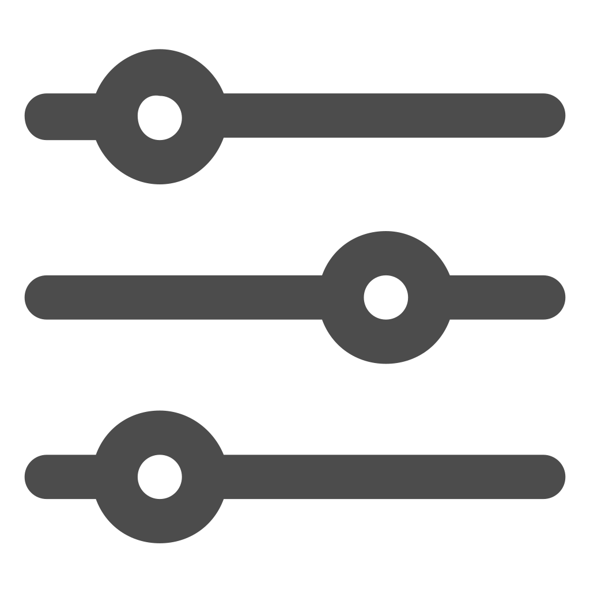

<!DOCTYPE html>
<html>

</html>
<head>
<title>CityZen</title>


<link rel="stylesheet" type="text/css" href="baranav+body.css">
<link rel="stylesheet" type="text/css" href="header.css">
<link rel="stylesheet" type="text/css" href="index.css">

</head>
<body>

<!--
<div class="topnav">
  <input type="text" id="Search" onkeyup="myFunction()" placeholder="Cauta evenimente...">
</div>
-->

<!--
<?php
$con=mysqli_connect("example.com","peter","abc123","my_db");
// Check connection
if (mysqli_connect_errno())
{
echo "Failed to connect to MySQL: " . mysqli_connect_error();
}

$result = mysqli_query($con,"SELECT * FROM Persons");

echo "<table border='1'>
<tr>
<th>Firstname</th>
<th>Lastname</th>
</tr>";

while($row = mysqli_fetch_array($result))
{
echo "<tr>";
echo "<td>" . $row['FirstName'] . "</td>";
echo "<td>" . $row['LastName'] . "</td>";
echo "</tr>";
}
echo "</table>";

mysqli_close($con);
?>

-->

<h1 id="header" onclick="window.location.href='index.html'"></h1>
<div class="navbar">
  <a href="index.html">Pagina principală</a>
  <div class="dropdown">
    <button class="dropbtn" onclick = "deznat.html">Evenimente
      <i class="fa fa-caret-down"></i>
    </button>
    <div class="dropdown-content">
      <a href="deznat.html">Dezastre naturale</a>
      <a href="blocaje.html">Blocaje</a>
      <a href="accidente.html">Accidente</a>
      <a href="actevandalism.html">Acte de vandalism</a>
    </div>
  </div> 
  <a href="add.html">Adaugă eveniment</a>
  <a href="profile.html">Profil</a>
  <div class="right">
  	<a href="login.html">Login</a>

  	</div>
</div>

<div id="Main">

 <h2 class="newTitle">Cele mai recente evenimente&ensp;
         <span style="font-weight:normal;">
                <font face="Roboto" size="4" onclick="showFiltering()">
                     FILTREAZĂ</font></span></h2>

 <div id="filter-panel">
    <div class="FilterBox">
        <p>Tip: 
            <input type="checkbox" name="accidente" value="Accidente">Accidente 
            <input type="checkbox" name="acte_de_vandalism" value="Acte de vandalism">Acte de vandalism 
            <input type="checkbox" name="blocaje" value="Blocaje">Blocaje
            <input type="checkbox" name="dezastre naturale" value="Dezastre naturale">Dezastre naturale
        </span>
        <!-- &emsp;&emsp;&emsp;&emsp;&emsp;&emsp;&emsp;&emsp;&emsp;&emsp;&emsp;&emsp; -->
        </p>

        <p><span style="float:center">Localitate:
         <select name="localitate">
                <option value="harlau">Hârlău</option>
                <option value="iasi">Iași</option>
                <option value="letcani">Lețcani</option>
                <option value="madarjesti">Mădârjești</option>
                <option value="marasesti">Mărășești</option>
            </select>
        </span>

        <!-- &emsp;&emsp;&emsp;&emsp;&emsp;&emsp;&emsp;&emsp;&emsp;&emsp;&emsp;&emsp; -->

        <span style="float:right">Data:
            <input type="date" name="data">
        </span>
        </p>
    </div>
</div>

<p id="p1"></p>

<script>
var ok = 0;

function showFiltering() {

if(ok) {
    document.getElementById("filter-panel").style.display = "none";

    document.getElementById("p1").innerHTML = "";

    ok = 0;
}

else {
    document.getElementById("filter-panel").style.display = "block";
    document.getElementById("p1").innerHTML = "<br><br><br><br><br><br><br><br>";
    ok = 1;
    }
}
</script>


  <div class="EventBox">
    <h2>Accident la Hârlău</h2>
    <p>Tipul evenimentului: Accidente</p>
    <p>Localitate: Hârlău </p>
    <p>Data: 22 martie 2019</p>
    <p>Detalii: Unui bărbat de 27 din judeţul Botoşani i s-a întocmit dosar penal după ce a provocat, ieri, un accident rutier pe raza localităţii Hârlău. Bărbatul se deplasa cu un Volkswagen dinspre Botoşani, iar la un moment dat a intrat într-o depăşire fără a se asigura. A lovit atunci un alt autoturism de aceeaşi marcă, la volanul căruia se afla un alt bărbat, de 53 de ani, din localitatea Popricani. Impactul a fost unul violent. Niciunul dintre şoferi nu a suferit răni grave.</p>
  </div>

  <div class="EventBox" >
    <h2>Accidente la Lețcani</h2>
    <p>Tipul evenimentului: Accidente</p>
    <p>Localitate: Lețcani </p>
    <p> Data : 20 martie 2019</p>
    <p>Detalii: Trei accidente s-au petrecut în decurs de o oră la Lețcani joi dimineață. Circulația a fost complet blocată. Primul accident s-a petrecut în jurul orei 7:45 pe raza localității Lețcani. Trei mașini au fost implicate, iar două persoane au fost rănite. Al doilea accident s-a produs în jurul orei 8:45 pe drumul care leagă Lețcani de Podu Iloaiei. O autobasculantă a intrat în coliziune cu un autoturism condus de o femeie. Șoferița a ajuns la spital. Despre cel de-al treilea accident nu avem detalii. Știm că au fost implicate două mașini.</p>
  </div>
  <div class="EventBox">
    <h2>Drumurile au fost inundate de la ploaie</h2>
    <p>Tipul evenimentului: Dezastre naturale</p>
    <p>Localitate: Mărășești,Suceava </p>
    <p>Data : 10 martie 2019</p>
    <p> Detalii : De la ploaia de seara trecută, drumurile din Mărășești au fost inundate, și apa a ajuns până și în casele oamenilor.</p>
  </div>

    <div class="EventBox">
    <h2>Test de rezistență pentru Pasajul Băncilă</h2>
    <p>Tipul evenimentului: Blocaje</p>
    <p>Localitate: Iași </p>  
    <p>Data: 2 martie 2019</p>
    <p>Detalii: 12 camioane care cântăreau peste 400 de tone au traversat pasarela, dar au și staționat pe fiecare porțiune. "Vor fi încărcate pe pod, în anumite poziții determinate strict de către proiectant, iar în acele poziții se vor măsura deformațiile pe care le suportă podul", a explicat directorul tehnic al firmei de construcții. Pentru că testele nu au indicat probleme, pasarela va fi deschisă peste o săptămână, la doi ani distanță însă de termenul anunțat inițial pentru punerea în funcțiune. Dar greșelile de proiectare au dus la o amânare.</p>
  </div>

    <div class="EventBox">
    <h2>Bisericile, noua țintă a hoților</h2>
    <p>Tipul evenimentului: Acte de vandalism</p>
    <p>Localitate: Mădârjești </p>
    <p>Data: 28 februarie 2019</p>
    <p>Detalii: Biserica de patrimoniu din localitatea Mădârjești a fost construită în 1816 și este vizitată mai mult de hoți decât de enoriași. În ultimii doi ani, au fost reclamate cinci furturi, iar ultimul a avut loc chiar acum 2 săptămâni, când hoții au distrus ușa de la intrare în încercarea de a ajunge la cutia milei. Lăcașul de cult nu are pază sau sistem de alarmare. "O să punem și noi, dar trebuie să vorbesc cu enoriașii să strângem o colectă și după aceea să punem, altă soluție nu este", a spus preotul.</p>
  </div>

      <div class="EventBox">
    <h2>Semafoarele "inteligente" din Iași provoacă haos</h2>
    <p>Tipul evenimentului: Blocaje</p>
    <p>Localitate: Iași </p>
    <p>Data: 6 februarie 2019</p>
    <p>Detalii: S-a circulat cu greu dimineață în municipiul Iași. Șoferii au mers bară la bară și au stat și câte o oră ca să traverseze o distanță pe care, de regulă, o parcurgeau în câteva minute. Traficul a fost dat peste cap de noul sistem de management al traficului pe care autoritățile îl testează zilele acestea. "50 de minute pe o distanță de jumătate de kilometru, maxim." "- Vi se pare că s-a mai fluidizat traficul de când cu semafoarele noi? - Nu, nu, deloc, mai tare încurcă."</p>
  </div>

    <div class="EventBox">
    <h2>Restricții de circulație ca urmare a desființării unui imobil</h2>
    <p>Tipul evenimentului: Blocaje</p>
    <p>Localitate: Iași </p>
    <p>Data: 3 ianuarie 2019</p>
    <p>Detalii: În cursul zilei de astăzi se vor lua măsuri de restricționare a circulației auto pe strada Școalei și pe strada Păcurari, pe sensul de coborâre, pentru executarea lucrărilor de desființare a imobilului situat pe strada Păcurari nr. 86. Traficul auto se va desfășura pe străzile adiacente, sub îndrumarea agenților de poliție. Poliția Municipiului Iași, Biroul Rutier și Poliția Locală vor lua deciziile privind închiderea / restricționarea circulației rutiere, în funcție de necesități, în zona lucrărilor de desființare.</p>
  </div>


  </div>

</div>

<script>
function myFunction() {
  var input, filter, table, tr, td, i, txtValue;
  input = document.getElementById("Search");
  filter = input.value.toUpperCase();
  table = document.getElementById("myTable");
  tr = table.getElementsByTagName("tr");
  for (i = 0; i < tr.length; i++) {
    td = tr[i].getElementsByTagName("td")[0];
    if (td) {
      txtValue = td.textContent || td.innerText;
      if (txtValue.toUpperCase().indexOf(filter) > -1) {
        tr[i].style.display = "";
      } else {
        tr[i].style.display = "none";
      }
    }       
  }
}
</script>

</body>

